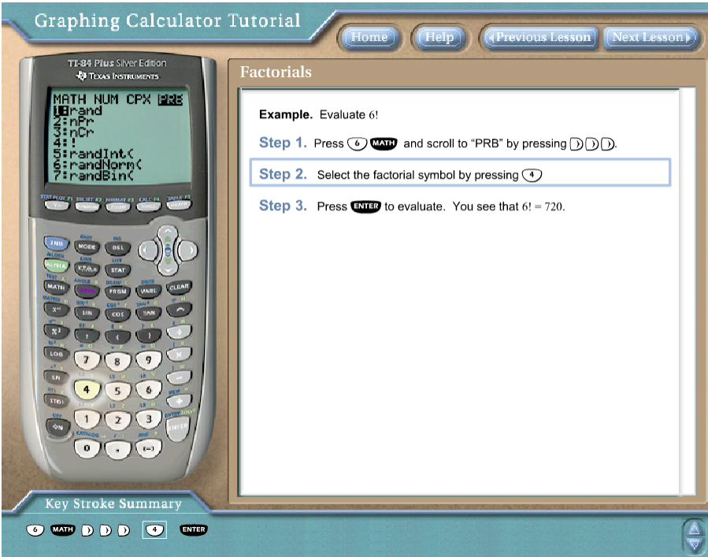

I greet you this day,
First: Read the notes/eText.
Second: View the videos/multimedia resources.
Third: Solve the solved examples.
Fourth: Check your solutions with my thoroughly-explained solutions.
Fifth: Check your answers with the calculators as applicable.
Samuel Dominic Chukwuemeka (SamDom For Peace) B.Eng., A.A.T, M.Ed., M.S
Students will:
(1.) Discuss the basic concepts used in Combinatorics.
(2.) State the Fundamental Counting Principle.
(3.) Determine the number of ways two tasks can be done consecutively.
(4.) Determine the number of ways multiple tasks can be done successively.
(5.) Determine the number of permutations of items.
(6.) Determine the number of permutations of duplicate items.
(7.) Determine the number of permutations of total items taking some items at a time.
(8.) Discuss circular permutation.
(9.) Determine the number of combinations of total items taking some items at a time.
Combinatorics is the mathematics of counting.
It is the branch of mathematics that deals with the counting of finite items, and the arrangement of finite
items with or without regard to the order of arrangement.
The Fundamental Counting Principle is also referred to as:
The Fundamental Principle of Counting
OR
The Multiplication Principle
OR
The Counting Principle
OR
The Principle of Counting.
I sing tenor.
I sing bass.
I dance Davidic dance.
I dance Ibo traditional dance.
In how many ways can I sing and dance?
Let tenor be $T$
bass be $B$
Davidic dance be $D$
Ibo traditional dance = $I$
So, I can:
$T - D$: Sing tenor and dance Davidic dance
$T - I$: Sing tenor and dance Ibo traditional dance
$B - D$: Sing bass and dance Davidic dance
$B - I$: Sing bass and dance Ibo traditional dance
I can sing and dance in 4 ways.
I can sing and dance in (2 * 2) ways.
This leads us to...
The Fundamental Counting Principle states that if:
A task can be done in $A$ ways and
Another task can be done in $B$ ways;
then both tasks can be done consecutively in $A * B$ ways.
Student: What if we have to do multiple tasks?
Teacher: Good question!
That leads us to...
The Generalized Multiplication Principle states that the
total number of ways of doing multiple tasks in succession is the
product of the number of ways of doing each task individually.
The permutation of items is the number of the different arrangements of the items
with regard to the order of arrangement.
The emphasis is in order
Be it arrangement or selection of items, if order is of importance; then it is permutation.
Teacher: What is your favorite retail store?
Student: Walmart
Teacher: Let's assume you work at Walmart.
You are asked to arrange three different shirts on three different racks.
Let the shirts be: Shirt $A$, $B$, and $C$
Let the racks be: Rack $1$, $2$, and $3$
How would you arrange the shirts on the racks?
Student: Place Shirt $A$ on Rack $1$, Shirt $B$ on Rack $2$ and Shirt $C$ on Rack $3$
Teacher: Okay...
Is that all?
You just listed one way of arrangement.
What other ways of arrangement do we have?
Student: What other ways do we have?
Teacher: The remaining arrangements are:
Place:
Shirt $A$ on Rack $1$, Shirt $C$ on Rack $2$, and Shirt $B$ on Rack $3$
Shirt $B$ on Rack $1$, Shirt $A$ on Rack $2$, and Shirt $C$ on Rack $3$
Shirt $B$ on Rack $1$, Shirt $C$ on Rack $2$, and Shirt $A$ on Rack $3$
Shirt $C$ on Rack $1$, Shirt $A$ on Rack $2$, and Shirt $B$ on Rack $3$
Shirt $C$ on Rack $1$, Shirt $B$ on Rack $2$, and Shirt $A$ on Rack $3$
Let us represent them using a table.
| Rack $1$ | Rack $2$ | Rack $3$ |
|---|---|---|
| $A$ | $B$ | $C$ |
| $A$ | $C$ | $B$ |
| $B$ | $A$ | $C$ |
| $B$ | $C$ | $A$ |
| $C$ | $A$ | $B$ |
| $C$ | $B$ | $A$ |
So, we have six ways of arranging three shirts on three racks.
Arranging three shirts on three racks: we can also say:
(I.) Permutation of three items (shirts) OR
(II.) Permuation of three items (shirts) taking three items (racks) at a time OR
(III.) Perm $3$ OR
(IV.) Perm $3$ from $3$ OR
(V.) $3$ permutation $3$ OR
(VI.) $3$ perm $3$ among others.
The result is $6$ ways.
In the example table, we listed the different permutations of three shirts on three racks.
But, what if we just wanted to determine the number of permutations rather than listing each permutation?
We can say that:
Any of the 3 shirts can be placed on Rack 1
So, this can be done in 3 ways.
Once a shirt in placed on Rack 1, any of the two remaining shirts can be placed on Rack 2
This can be done in 2 ways.
Once a shirt is placed on Rack 2, the remaining shirt can be placed on Rack 3
This can be done in only 1 way.
Therefore, the number of ways of arranging three shirts on three racks is: $3 * 2 * 1 = 6$ ways.
This brings us to the:
Factorial Notation (!)
Student: Exaclamation mark?
Teacher: Yes, Exaclamation mark. 😊
English punctuation mark in Mathematics? $smile$
Well, here we do not say exclamation mark.
We say: factorial
For example: $3!$ is read as $3-factorial$
The exclamation mark in English Language, $!$ is known as the factorial notation in
Discrete Mathematics
Look at your scientific calculator and/or graphing calculator.
You will see this function under PRB (PRM means Probability)
This is where you find it and other combinatorics functions (permutation and combination) in the
TI-84/84 Plus calculators

NOTE: At the time of writing this note, Adobe Flash (which is blocked by most major internet browsers) is required to use this calculator.
If you do not want to allow Adobe Flash on your browser, you can contact me via the school's email system and I shall walk you through
on how you can use your TI-84/84-Plus to solve some combinatorics problems.
The steps to do it are:
(1.) Visit the website: TI-84 Graphing Calculator website
(2.) Click the Basic Statistics and Probability folder
(3.) Click the Factorials icon
(4.) Follow the steps using the blinking light
(5.) Click the Permutations icon and do same.
(6.) Click the Combinations icon and do same.
As we have seen:
$
3! = 6 \\[3ex]
Because: \\[3ex]
3! = 3 * 2 * 1 = 6 \\[3ex]
Similarly: \\[3ex]
4! = 4 * 3 * 2 * 1 = 24 \\[3ex]
5! = 5 * 4 * 3 * 2 * 1 = 120 \\[3ex]
2! = 2 * 1 = 2 \\[3ex]
...and\;\;so\;\;on \\[3ex]
\therefore n! = n * (n - 1) * (n - 2) * (n - 3) * (n - 4) * ... * 1 \\[3ex]
$
Student: What about $1!$? and $0!$
What about $-2!$?
Teacher: You just asked very important questions.
Please note:
$
0! = 1 \\[3ex]
1! = 1 * 0! = 1 * 1 = 1 \\[3ex]
$
Factorials exist for only non-negative integers (zero and positive integers only)
Factorials for negative integers are undefined. They do not exist.
Student: How and why?
Why is $0!$ equal to $1$
Teacher: Do you really want me to go into details?
For this course, I just ask that you note that $0! = 1$
But, are you prepared to learn some details?
Student: Don't worry about it then.
So, we can define the factorial notation of a number as the number of permutations of the number.
The example we listed in the table can simply be written as $3! = 6$ arrangements.
Arranngement of the letters ABC gives $6$ different ways of arrangements.
Teacher: You know what I'm thinking?
Student: What are you thinking, Mr. C?
Teacher: In my elementary schools days,
Say we acted up.
Student: Of course, I know you acted up.
Teacher: Excuse me...how did you know?
But anyway... 😊
Our teacher gave us options:
Spanking OR
Doing some extensive writing on many pages of an exercise book
Writing something like this: ...
"I am sorry Auntie, I will not do it again."
Student: You called your teacher, Auntie?
Is she your Aunt?
Teacher: No, she is not.
But, we called our teachers Uncles and Aunties...back in those days
And we had to write each sentence very well so that it will not cross the lines in the pages of the book
That improved our writing...punishment that also taught us to write
Because if any sentence crossed the line (either the line above or the line below), we had to write it again.
I am thinking of a good punishment that would improve Math skills...
Student: And what is the punishment?
Teacher: List all the permutations of the word, SAMUEL
Student: The number of permutations will be $6! = 720$ ways.
Teacher: I asked for the listing of the permutations.
I did not ask for the number of the permutations.
Yes, the number of permutations can act as a check to ensure you listed all of them.
Student: Mr. C, would you really give a child this kind of punishment?
TO write 720 permutations?
SAMUEL
SAMULE
SAMLEU
SAMLUE
...
That is a lot of work.
Teacher: I would not ask an adult to list all the permutations.
But, would I tell a child to do it?
Yes, I would.
Student: Why would you do that, Mr. C?
That is child abuse.
Teacher: Excuse me, my dear.
That is more beneficial that allowing the child to play video games for an hour.
Children are very intelligent.
They are energetic.
They love to explore.
You need to give them a lot of work so they do not waste all their potentials.
Well, let's continue
Example 2:
What if I ask you to arrange three shirts: $A, B, C$ in two racks: Rack $1$ and Rack $2$?
(1.) List the permutations of three items taking two at a time.
(2.) How many permutations are there?
Student: Place:
Shirt $A$ in Rack $1$ and Shirt $B$ in Rack $2$
Shirt $B$ in Rack $1$ and Shirt $A$ in Rack $2$
Shirt $A$ in Rack $1$ and Shirt $C$ in Rack $2$
Shirt $C$ in Rack $1$ and Shirt $A$ in Rack $2$
Shirt $B$ in Rack $1$ and Shirt $C$ in Rack $2$
Shirt $C$ in Rack $1$ and Shirt $B$ in Rack $2$
$6$ permutations.
Is that correct?
Teacher: That is correct.
Student: It still gives us $6$ permutations.
So, $3$ permutation $3$ and $3$ permutation $2$ gives the same number of permutations?
Teacher: That is correct.
Student: Hmmmm...it's sort of confusing.
Is there a formula for this?
Teacher: You are asking good questions.
Yes, we have the formula for permutation.
We shall get to it soon.
Let's do more examples.
So, when we use the formulas, we shall verify our answers with the formulas.
Example 3:
Arrange three shirts: $A, B, C$ in one rack: Rack $1$
Student:
I guess it has to be $3$ ways
Shirt $A$ in Rack $1$
Shirt $B$ in Rack $1$
Shirt $C$ in Rack $1$
Teacher: That is correct.
$3$ perm $1$ is $3$
$3$ perm $2$ is $6$
$3$ perm $3$ is also $6$
Note these results so that when we use the formula to calculate them, we shall verify these answers with the
answers from the formula.
Let us do two more examples.
Then, we shall write the formula and solve the same examples with the formula.
Example 4:
Perm $2$ from $4$
Draw a table to show the permutations.
Student: So, you mean I should arrange four shirts in two racks?
Teacher: That is correct.
| Rack $1$ | Rack $2$ |
|---|---|
| $A$ | $B$ |
| $B$ | $A$ |
| $A$ | $C$ |
| $C$ | $A$ |
| $A$ | $D$ |
| $D$ | $A$ |
| $B$ | $C$ |
| $C$ | $B$ |
| $B$ | $D$ |
| $D$ | $B$ |
| $C$ | $D$ |
| $D$ | $C$ |
Number of permutations of four items taking two at a time is $12$ permutations.
Teacher: Correct!
Example 4:
Determine $P(4, 3)$
Student: In other words, find the number of permutations of four shirts in three racks.
Teacher: Yep...
| Rack $1$ | Rack $2$ | Rack $3$ |
|---|---|---|
| $A$ | $B$ | $C$ |
| $A$ | $C$ | $B$ |
| $A$ | $B$ | $D$ |
| $A$ | $D$ | $B$ |
| $A$ | $C$ | $D$ |
| $A$ | $D$ | $C$ |
| $B$ | $A$ | $C$ |
| $B$ | $C$ | $A$ |
| $B$ | $A$ | $D$ |
| $B$ | $D$ | $A$ |
| $B$ | $C$ | $D$ |
| $B$ | $D$ | $C$ |
| $C$ | $A$ | $B$ |
| $C$ | $B$ | $A$ |
| $C$ | $B$ | $D$ |
| $C$ | $D$ | $B$ |
| $C$ | $A$ | $D$ |
| $C$ | $D$ | $A$ |
| $D$ | $A$ | $B$ |
| $D$ | $B$ | $A$ |
| $D$ | $A$ | $C$ |
| $D$ | $C$ | $A$ |
| $D$ | $B$ | $C$ |
| $D$ | $C$ | $B$ |
There are $24$ ways of arranging four shirts in three racks.
Teacher: Correct!
Let us write the formula that determines the number of permutations of $n$ items taking $r$ items at a time.
We can say it is the number of permutations of total items taking some items at a time.
It is denoted as:
The number of permutations of $n$ total items taking $r$ items at a time is $^nP_r$ or $_nP_r$ or $P(n, r)$
$
P(n, r) = \dfrac{n!}{(n - r)!} \\[5ex]
$
Let us verify all our examples with this formula.
$
Example\;1: \\[3ex]
P(3, 3) \\[3ex]
= \dfrac{3!}{(3 - 3)!} \\[5ex]
= \dfrac{3!}{0!} \\[5ex]
= \dfrac{3 * 2 * 1}{1} \\[5ex]
= \dfrac{6}{1} \\[5ex]
= 6 \\[5ex]
\therefore P(3, 3) = 6 \\[7ex]
Example\;2: \\[3ex]
P(3, 2) \\[3ex]
= \dfrac{3!}{(3 - 2)!} \\[5ex]
= \dfrac{3!}{1!} \\[5ex]
= \dfrac{3 * 2 * 1}{1} \\[5ex]
= \dfrac{6}{1} \\[5ex]
= 6 \\[5ex]
\therefore P(3, 2) = 6 \\[3ex]
Notice\;\;we\;\;got\;\;the\;\;same\;\;answer \\[7ex]
Example\;3: \\[3ex]
P(3, 1) \\[3ex]
= \dfrac{3!}{(3 - 1)!} \\[5ex]
= \dfrac{3!}{2!} \\[5ex]
= \dfrac{3 * 2 * 1}{2 * 1} \\[5ex]
= 3 \\[5ex]
\therefore P(3, 1) = 3 \\[7ex]
Example\;4: \\[3ex]
P(4, 2) \\[3ex]
= \dfrac{4!}{(4 - 2)!} \\[5ex]
= \dfrac{4!}{2!} \\[5ex]
An\;\;easier\;\;way\;\;to\;\;simplify\;\;this \\[3ex]
= \dfrac{4 * 3 * 2!}{2!} \\[5ex]
= 4 * 3 \\[3ex]
= 12 \\[5ex]
\therefore P(4, 2) = 12 \\[7ex]
Example\;5: \\[3ex]
P(4, 3) \\[3ex]
= \dfrac{4!}{(4 - 3)!} \\[5ex]
= \dfrac{4!}{1!} \\[5ex]
= 4! \\[3ex]
= 4 * 3 * 2 * 1 \\[3ex]
= 24 \\[5ex]
\therefore P(4, 3) = 24
$
Say:
$n$ is the number of items ($n$ items)
$c$ and $d$ are the number of duplicate items
$n!$ is read as $n-factorial$
The number of permutations of $n$ items is $n!$
The number of permutations of duplicate items is $\dfrac{n!}{c! * d!}$
The number of permutations of $n$ total items taking $r$ items at a time is $^nP_r \;\;\;or\;\;\; _nP_r \;\;\;or\;\;\; P(n, r)$
The number of combinations of $n$ total items taking $r$ items at a time is $^nC_r \;\;\;or\;\;\; _nC_r \;\;\;or\;\;\; C(n, r) \;\;\;or\;\;\; \displaystyle{\binom{n}{r}}$
$
(1.)\:\: 0! = 1 \\[3ex]
(2.)\:\: n! = n * (n - 1) * (n - 2) * (n - 3) * ... * 1 \\[3ex]
(3.)\;\; n! = n * (n - 1)! \\[3ex]
(4.)\;\; n! = n * (n - 1) * (n - 2)!...among\;\;others \\[3ex]
(5.)\;\; (n - 1)! = (n - 1) * (n - 2)!...among\;\;others \\[3ex]
(6.)\;\; (n - 2)! = (n - 2) * (n - 3) * (n - 4)!...among\;\;others \\[3ex]
(7.)\;\; (n - 3)! = (n - 3) * (n - 4)!...among\;\;others \\[3ex]
(8.)\:\: P(n, r) = \dfrac{n!}{(n - r)!} \\[5ex]
(9.)\:\: C(n, r) = \dfrac{n!}{(n - r)!r!} \\[5ex]
(10.)\;\; P(n, r) = n! * C(n, r) \\[3ex]
(11.)\;\; C(n, r) = C(n, n - r) \\[3ex]
(12.)\;\; (n - r) * P(n, r) = P(n, r + 1) \\[3ex]
(13.)\;\; Number\;\;of\;\;circular\;\;permutations = (n - 1)! \\[3ex]
$
Case 1:
Given: a certain number of digits/letters say $p$
(10.) The number of unique number of digits/letters say $c$ digits/letters that can be formed if the digits/letters may be
repeated is $p^c$ digits/letters.
(11.) The number of unique number of digits/letters say $c$ digits/letters that can be formed if the digits/letters may not be
repeated is $P(p, c)$ digits/letters.
Case 2:
Given: a certain number of people or items in a linear random order say $n$
(12.) The number of ways in which two people or two items must be close together is $2 * (n - 1) * (n - 2)!$ ways
Questions and Answers
Specify the type of case for each question as applicable.
(1.) Mr. C has two shirts: a black shirt and a white shirt.
He has three pants: a black pant, a red pant, and a green pant.
In how many ways can he dress up for work using any combination of shirt and pant?
Show the combinations.
(2.) Zinne Diners offers ten main courses, three desserts, and seven sides.
How many ways can a person order a three-course meal?
Teacher: Who wants some "brain work"?
Or guess what...this could be a good punishment for children that misbehave
Student: Hmmm...what is it? Spanking?
Teacher: No...
The punishment would be to list all the combinations for the three course meal. ☺☺☺
Let main course = M, dessert = D, and side = S
So, you begin with: $M1D1S1, M1D1S2, M1D1S3,...$ and the list goes on till...
Student: $210$ lol...
I think it is better than spanking...much better
(3.) ACT An automobile license plate number issued by a certain state has $6$ character positions.
Each of the first $3$ positions contains a single digit from $0$ through $9$.
Each of the last $3$ positions contains $1$ of the $26$ letters of the alphabet.
Digits and letters of the alphabet can be repeated on a license plate.
How many different such license plate numbers can be made?
(4.)
The United States social security number (SSN) contains nine digits.
How many different social security numbers are possible if:
(a.) repetition of digits are allowed?
(b.) repetition of digits are not allowed?
(c.) repetition of digits are allowed and the first number cannot begin with a $0$?
(d.) repetition of digits are not allowed and the first number cannot begin with a $0$?
(5.) Micah is taking a multiple choice question test that has $5$ questions and $4$ answer choices.
He must attempt all questions and select one choice for each question.
How many ways can he answer the questions?
(6.)
ACT Get-A-Great-Read Books is adding a new phone line.
The phone company says that the first $3$ digits of the phone number must be $555$, but the remaining
$4$ digits, where each digit is a digit from $0$ through $9$, can be chosen by Get-A-Great-Read Books.
How many phone numbers are possible?
$
A.\:\: 5(9^4) \\[3ex]
B.\:\: 5^3(9^4) \\[3ex]
C.\:\: 5^3(10^4) \\[3ex]
D.\:\: 9^4 \\[3ex]
E. 10^4
$
(7.) The local ten-digit telephone numbers in the City of Truth or Consequences, New Mexico have $575$
as the area code.
How many different telephone numbers are possible in the City of "Speak the Truth or Face the Consequences", New Mexico?
(8.)
Sometimes, the value of a stock may go up, go down, or remain constant.
How many possibilities are there for someone who owns ten stocks?
(9.) In the original plan for area codes in $1945$, the first digit could be any number from $2$ through $9$;
the second digit was either $0$ or $1$; and the third digit could be any number except $0$.
How many different area codes are possible with this plan?
(10.)
The new license plate of the State of Georgia has three letters followed by five numbers.
How many license plates of this kind are possible if:
(a.) repetition of letters and numbers are allowed?
(b.) repetition of letters and numbers are not allowed?
(c.) repetition of letters are allowed but the repetition of numbers are not allowed?
(d.) repetition of letters are not allowed but the repetition of numbers are allowed?
(11.) ACT A committee will be selected from a group of $12$ women and $18$ men.
The committee will consist of $5$ women and $5$ men.
Which of the following expressions gives the number of different committees that could be selected
from these $30$ people?
$
F.\:\: _{30}P_{10} \\[3ex]
G.\:\: (_{12}P_5)(_{18}P_5) \\[3ex]
H.\:\: _{30}C_{10} \\[3ex]
J.\:\: (_{30}C_5)(_{30}C_5) \\[3ex]
K.\:\: (_{12}C_5)(_{18}C_5)
$
(12.) How many different five-letter radio station call letters can be formed if the first letter must be $S$ or $C$?
(13.) ACT The employees at a hotel reservation center assign an $8-digit$ confirmation number ($CN$)
to each customer making a reservation.
The first digit in each $CN$ is $8$.
The other $7$ digits can be any digit $0$ through $9$, and digits may repeat.
How many possible $8-digit\:\: CNs$ are there?
$
A.\:\: 8^7 \\[3ex]
B.\:\: 9^7 \\[3ex]
C.\:\: 10^7 \\[3ex]
D.\:\: 8^8 \\[3ex]
E.\:\: 10^8
$
(14.) $C-Mart$ Stores has a new store in Two Egg, Florida.
One of their employees has to paint the parking spaces with a letter of the alphabet and a single
digit from $1$ to $9$.
The first parking space is $A1$ and the last parking space is $Z9$.
How many parking spaces can be painted with distinct labels?
(15.) Find the number of permutations of the word, SAMUEL
(16.) Find the number of permutations of the word, CHUKWUEMEKA
(17.) Find the number of permutations of the word, SAMDOM4PEACE
(18.) Find the number of permutations of the word, MATHEMATICS
(19.) In how many ways can the digits in the number $345237573$ be arranged?
(20.) In how many ways can seven people line up at Register $3$ in a certain Walmart store to check out?
Chukwuemeka, S.D (2016, April 30). Samuel Chukwuemeka Tutorials: Math, Science, and Technology.
Retrieved from https://mathematicscourses.github.io/MathematicsEducation/
Beckmann, S. (2022). Skills Review for Mathematics for Elementary and Middle School Teachers with Activities. Pearson Education, Inc.
Billstein, R., Boschmans, B., Shlomo Libeskind, & Lott, J. W. (2020). A Problem Solving Approach to Mathematics for Elementary School Teachers. Pearson Education.
Blitzer, R. (2015). Thinking Mathematically (6th ed.).
Boston: Pearson
Tan, S. (2015). Finite Mathematics for the Managerial, Life, and Social Sciences (11th ed.).
Boston: Cengage Learning.
Triola, M. F. (2015). Elementary Statistics using the TI-83/84 Plus Calculator
(5th ed.).
Boston: Pearson
Georgia Gov. (n.d.). Retrieved from https://georgia.gov/blog/2012-05-16/new-license-plates-available
Microsoft Office Clip Art. (n.d.). Retrieved from https://support.office.com/en-us/article/add-clip-art-to-your-file-0a01ae25-973c-4c2c-8eaf-8c8e1f9ab530?legRedir=true&CorrelationId=9c8bb412-68e2-4db0-9704-c9af116e2521&ui=en-US&rs=en-US&ad=US
CrackACT. (n.d.). Retrieved from http://www.crackact.com/act-downloads/
CMAT Question Papers CMAT Previous Year Question Bank - Careerindia. (n.d.). Https://Www.Careerindia.Com. Retrieved May 30, 2020, from https://www.careerindia.com/entrance-exam/cmat-question-papers-e23.html
CSEC Math Tutor. (n.d). Retrieved from https://www.csecmathtutor.com/past-papers.html
Free Jamb Past Questions And Answer For All Subject 2020. (2020, January 31). Vastlearners. https://www.vastlearners.com/free-jamb-past-questions/
GCSE Exam Past Papers - Revision World. (n.d.). Revisionworld.Com. Retrieved April 6, 2020, from https://revisionworld.com/gcse-revision/gcse-exam-past-papers
Mathematics. (n.d.). Waeconline.Org.Ng. Retrieved May 30, 2020, from https://waeconline.org.ng/e-learning/Mathematics/mathsmain.html
NSC Examinations. (n.d.). www.education.gov.za. https://www.education.gov.za/Curriculum/NationalSeniorCertificate(NSC)Examinations.aspx
Papua New Guinea: Department of Education. (n.d.). www.education.gov.pg. https://www.education.gov.pg/TISER/exams.html